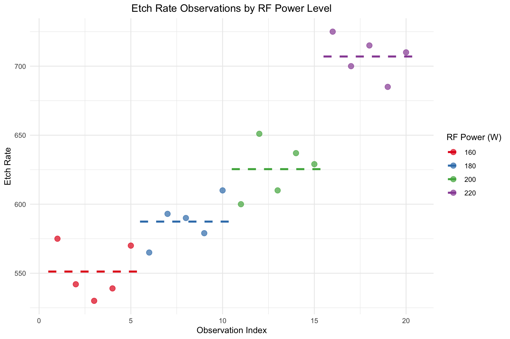

This section analyzes data from a Completely Randomized Design (CRD). In a CRD, experimental units (in this case, the silicon wafers being etched) are assigned to treatments (the RF Power levels) completely at random. The primary goal is to determine if changing the RF Power level has a statistically significant effect on the mean etch rate.
6.2.1 Data and Visualization
We begin by loading the data into a single, tidy data.frame. The response variable, rate, contains all the etch rate observations. The predictor variable, power, is a factor, which is R’s way of representing a categorical variable. This tells R to treat the different power levels as distinct groups.
Code
# Define the data vectorsrate <-c(575, 542, 530, 539, 570, 565, 593, 590, 579, 610,600, 651, 610, 637, 629, 725, 700, 715, 685, 710)power_levels <-c(160, 180, 200, 220)# Create the data frameetching_df <-data.frame(rate = rate,power =factor(rep(power_levels, each =5)))# Display the first few rowsetching_df
Grouped Boxplots
Code
boxplot(rate~power, data=etching_df)
Using ggplot to visualize grouped data
Code
library(ggplot2)library(dplyr) # Using dplyr for easier data manipulation# Calculate group means and their start/end indicesmean_rates <- etching_df %>%mutate(obs_index =row_number()) %>%group_by(power) %>%summarise(mean_rate =mean(rate),x_start =min(obs_index) -0.5,x_end =max(obs_index) +0.5 )ggplot(etching_df, aes(x =1:nrow(etching_df), y = rate, color = power)) +geom_point(size =3, alpha =0.7) +# Plot individual data pointsgeom_segment(data = mean_rates, aes(x = x_start, xend = x_end, y = mean_rate, yend = mean_rate),linetype ="dashed", size =1.2 ) +# Add line segments for group meanslabs(title ="Etch Rate Observations by RF Power Level",x ="Observation Index",y ="Etch Rate",color ="RF Power (W)" ) +scale_color_brewer(palette ="Set1") +theme_minimal() +theme(plot.title =element_text(hjust =0.5))

Index Plot of Etch Rate with Group-Specific Mean Lines
6.2.2 Model Fitting with Sum-to-Zero Constraint
We fit a linear model using the lm() function to perform an Analysis of Variance (ANOVA). The model is specified as rate ~ power, and we now include the data = etching_df argument.
To get interpretable estimates for the treatment effects (\(\tau_i\)), we use a sum-to-zero constraint (contr.sum), which forces the sum of the treatment effects to be zero (\(\sum \tau_i = 0\)).
Code
fit <-lm(rate ~ power, data = etching_df, contrasts =list(power = contr.sum))cat ("Model Matrix:\n")
summary.fit <-summary(fit)cat ("Summary of lm fitting results:\n")
Summary of lm fitting results:
Code
summary.fit
Call:
lm(formula = rate ~ power, data = etching_df, contrasts = list(power = contr.sum))
Residuals:
Min 1Q Median 3Q Max
-25.4 -13.0 2.8 13.2 25.6
Coefficients:
Estimate Std. Error t value Pr(>|t|)
(Intercept) 617.750 4.085 151.234 < 2e-16 ***
power1 -66.550 7.075 -9.406 6.39e-08 ***
power2 -30.350 7.075 -4.290 0.000563 ***
power3 7.650 7.075 1.081 0.295602
---
Signif. codes: 0 '***' 0.001 '**' 0.01 '*' 0.05 '.' 0.1 ' ' 1
Residual standard error: 18.27 on 16 degrees of freedom
Multiple R-squared: 0.9261, Adjusted R-squared: 0.9122
F-statistic: 66.8 on 3 and 16 DF, p-value: 2.883e-09
6.2.3 Point Estimation of Parameters
The output of the model provides estimates for the overall mean (\(\hat{\mu}\)) and the treatment effects for the first k-1 levels (\(\hat{\tau}_1, \hat{\tau}_2, \hat{\tau}_3\)).
\(\hat{\mu}\) (the Intercept) is the estimate of the grand mean etch rate across all power levels.
\(\hat{\tau}_i\) is the estimated effect of the i-th power level, representing how much that level’s mean deviates from the grand mean.
Using the sum-to-zero constraint, we can manually calculate the effect for the final level, \(\hat{\tau}_4\).
# Estimates of treatment means (mu_i)mu.hat <- est[1]mui.hat <- mu.hat + taui.hatprint("Estimated Treatment Means (mu_i):")
[1] "Estimated Treatment Means (mu_i):"
Code
print(mui.hat)
power1 power2 power3
551.2 587.4 625.4 707.0
6.2.4 ANOVA Table
The ANOVA table partitions the total variation into variation between treatment groups (power) and variation within treatment groups (random error). The p-value (Pr(>F)) indicates if the treatment has a significant effect.
Code
anova(fit)
6.2.5 95% Confidence Intervals for Treatment Means
A confidence interval provides a range of plausible values for the true mean etch rate at each power level.
6.2.6 Comparison with Default “Treatment” Contrast
Fitting the model without specifying contrasts uses R’s default (“treatment” contrast), which sets \(\tau_1 = 0\). The fundamental results (ANOVA, treatment means) remain unchanged.
Code
fit1 <-lm(rate ~ power, data = etching_df)summary(fit1)
Call:
lm(formula = rate ~ power, data = etching_df)
Residuals:
Min 1Q Median 3Q Max
-25.4 -13.0 2.8 13.2 25.6
Coefficients:
Estimate Std. Error t value Pr(>|t|)
(Intercept) 551.200 8.169 67.471 < 2e-16 ***
power180 36.200 11.553 3.133 0.00642 **
power200 74.200 11.553 6.422 8.44e-06 ***
power220 155.800 11.553 13.485 3.73e-10 ***
---
Signif. codes: 0 '***' 0.001 '**' 0.01 '*' 0.05 '.' 0.1 ' ' 1
Residual standard error: 18.27 on 16 degrees of freedom
Multiple R-squared: 0.9261, Adjusted R-squared: 0.9122
F-statistic: 66.8 on 3 and 16 DF, p-value: 2.883e-09
6.2.7 Pairwise Comparisons
Since our ANOVA result was significant, we perform post-hoc tests to determine exactly which pairs of power levels have different means.
6.2.7.1 Tukey’s HSD Test
Tukey’s Honest Significant Difference (HSD) controls the family-wise error rate, adjusting p-values to account for multiple comparisons.
Code
fit.aov <-aov(rate ~ power, data = etching_df)TukeyHSD(fit.aov)
Pairwise comparisons using t tests with pooled SD
data: rate and power
160 180 200
180 0.0064 - -
200 8.4e-06 0.0046 -
220 3.7e-10 1.7e-08 2.7e-06
P value adjustment method: none
6.2.8 Checking Model Assumptions
The validity of our ANOVA results depends on three key assumptions about the model’s residuals. We use diagnostic plots to check them.
Code
r <-rstudent(fit)fitted <-fitted.values(fit)
6.2.8.1 Normality of Residuals
A Normal Q-Q plot is used to check if the residuals are normally distributed. The points should fall closely along the straight diagonal line.
Code
qqnorm(r)qqline(r)
Normal Q-Q plot of standardized residuals.
6.2.8.2 Independence of Residuals
A plot of residuals versus run order helps check for independence. We look for random scatter around the zero line.
Code
plot(r, ylab ="Standardized residuals", xlab ="Run order",main ="Plot of residuals vs. run order")abline(h =0)
Standardized residuals vs. run order.
6.2.8.3 Constant Variance (Homoscedasticity)
A plot of residuals versus fitted values helps check for constant variance. The spread of residuals should be roughly constant across all fitted values.
Code
plot(fitted, r, ylab ="Standardized residuals", xlab ="Fitted values", main ="Plot of residuals vs. fitted values")abline(h =0)
Standardized residuals vs. fitted values.
6.3 Unbalanced Designs with nequal Sample Sizes
The ANOVA framework also handles unbalanced designs. We again start by creating a data frame.
# Fit the model and get the ANOVA tablefit2 <-lm(density ~ temperature, data = bricks_df)summary(fit2)
Call:
lm(formula = density ~ temperature, data = bricks_df)
Residuals:
Min 1Q Median 3Q Max
-0.300 -0.100 0.000 0.095 0.200
Coefficients:
Estimate Std. Error t value Pr(>|t|)
(Intercept) 21.74000 0.07171 303.150 <2e-16 ***
temperature125 -0.24000 0.10757 -2.231 0.0425 *
temperature150 -0.02000 0.10142 -0.197 0.8465
temperature175 -0.04000 0.10757 -0.372 0.7156
---
Signif. codes: 0 '***' 0.001 '**' 0.01 '*' 0.05 '.' 0.1 ' ' 1
Residual standard error: 0.1604 on 14 degrees of freedom
Multiple R-squared: 0.3025, Adjusted R-squared: 0.153
F-statistic: 2.024 on 3 and 14 DF, p-value: 0.1569
Code
anova(fit2)
In this case, the large p-value (0.133) indicates that there is no statistically significant evidence that firing temperature affects brick density.
6.4 Randomized Complete Block Design
6.5 Vascular Graft Experiment
This section analyzes a Randomized Complete Block Design (RCBD), used to control for a known source of variability (here, “batches of resin,” treated as blocks).
6.5.1 Data and Visulization
We structure the data in a data.frame to identify the response, treatment (pressure), and block (batch) for each observation.
Interaction between Material Type and Temperature.
### Model Fitting and ANOVA
The model `strength ~ pressure + batch` partitions the total variance into treatment, block, and error components. Our primary interest is in the significance of the `pressure` factor.
::: {.cell}
```{.r .cell-code}
rcbd.fit1 <- aov(strength ~ pressure + batch, data = graft_df)
anova(rcbd.fit1)
:::
The small p-value for pressure (0.0019) provides strong evidence that extrusion pressure significantly affects graft strength after accounting for batch differences.
6.5.2 Model Adequacy Checks
The assumptions for an RCBD are the same as for a CRD. We perform the same diagnostic checks.
Code
rcbd.r1 <-rstudent(rcbd.fit1)rcbd.fitted1 <-fitted.values(rcbd.fit1)qqnorm(rcbd.r1, main ="Normal Q-Q Plot")qqline(rcbd.r1)plot(rcbd.fitted1, rcbd.r1, ylab ="Standardized residuals", xlab ="Fitted values", main ="Residuals vs. Fitted")abline(h =0)plot(graft_df$pressure, rcbd.r1, ylab ="Standardized residuals", xlab ="Extrusion pressure", main ="Residuals vs. Treatment")abline(h =0)plot(graft_df$batch, rcbd.r1, ylab ="Standardized residuals", xlab ="Batches of raw material", main ="Residuals vs. Block")abline(h =0)
Normal Q-Q Plot
Residuals vs. Fitted Values
Residuals vs. Treatment (Pressure)
Residuals vs. Block (Batch)
6.5.3 Pairwise Comparisons
Again, since the treatment factor (pressure) is significant, we perform post-hoc tests.
6.5.3.1 Tukey’s HSD Test
Tukey’s HSD compares all pairs of treatment levels while controlling the family-wise error rate.